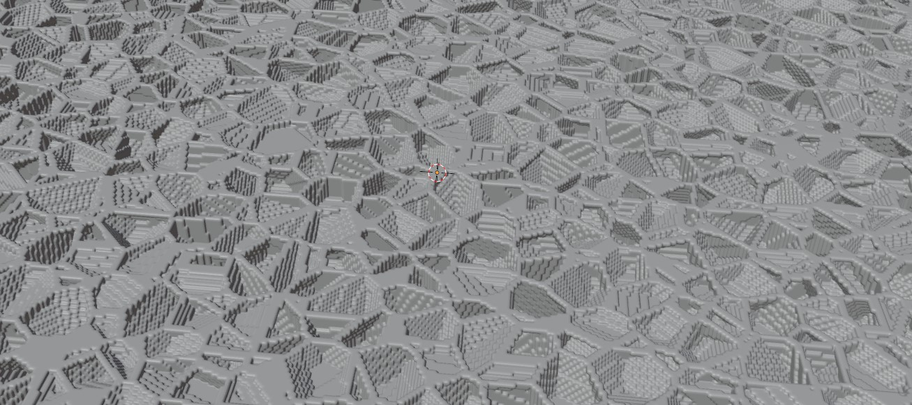
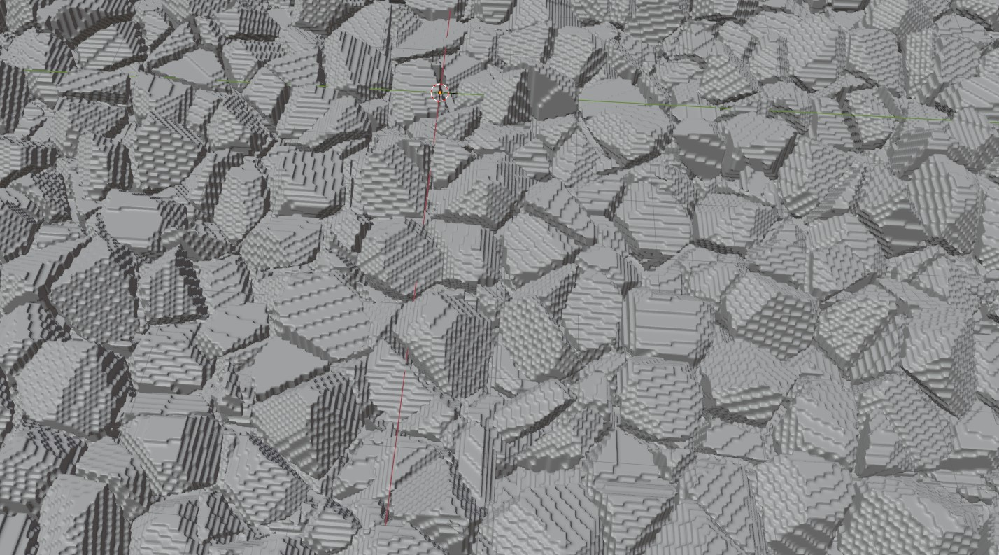
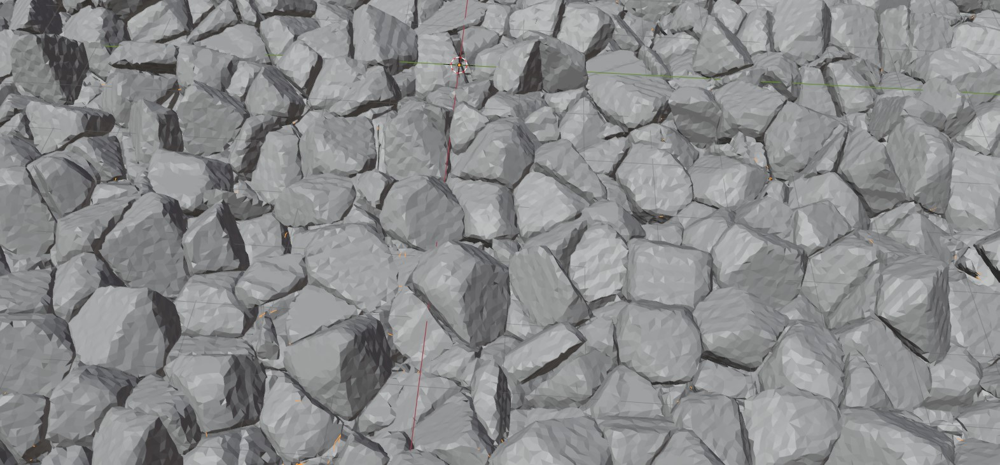
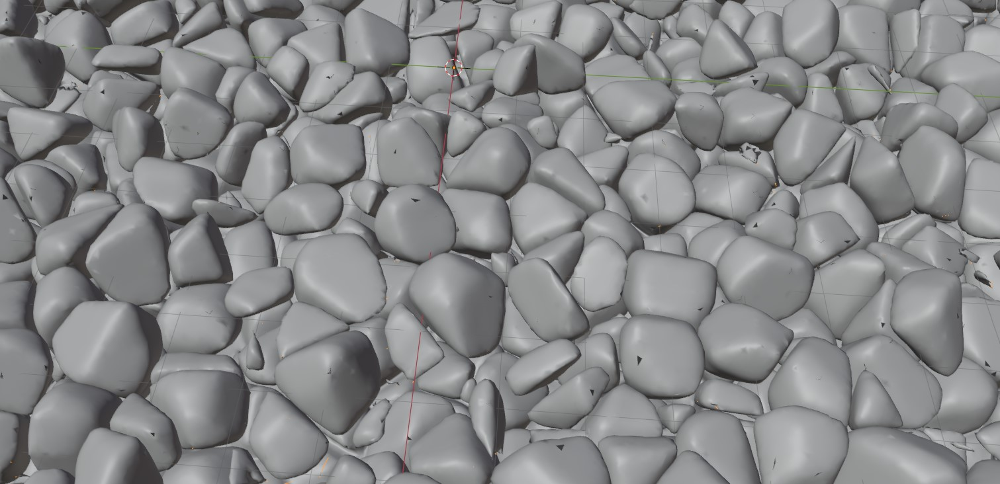
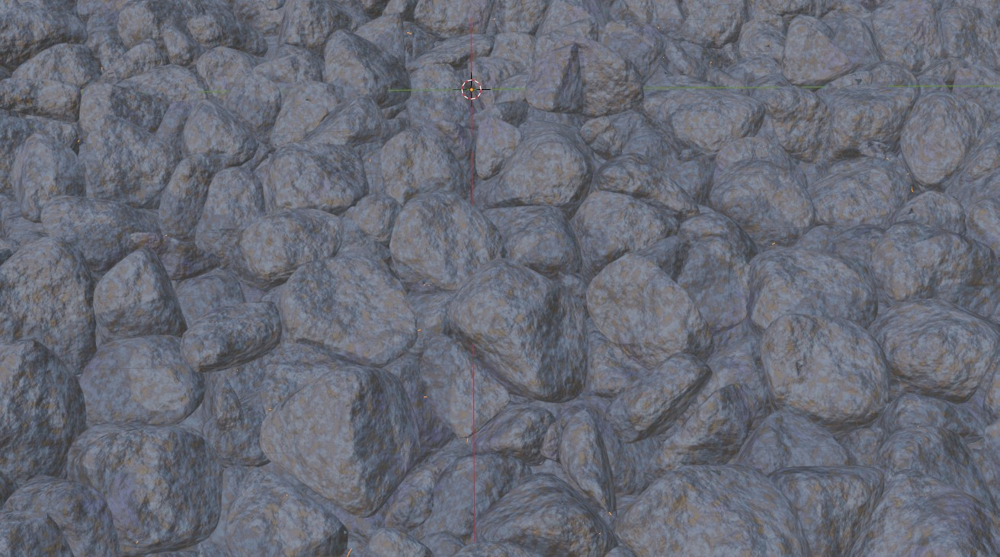
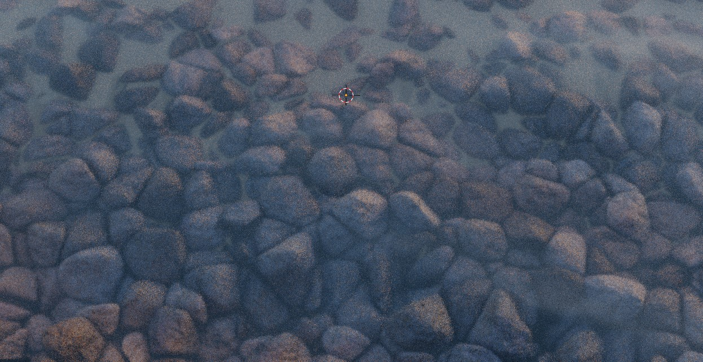

I found a good amount of resources to built rocks, but none of them built the rocks in mass. The few that I found built the rocks from a surface and were more for paths rather than the piles that I wanted it for.
A space is defined and a vornoi diagram is used to populate it with base polygons. Due to blender these are voxelized, but that can help with random noise to some extent.
Because the edge of the field cuts the polygons, deleting those polygons near the top prevents these problems. Doing this shows a lot of the randomness which is wanted.
Some vertex merging and offsetting is enough to get the rocks almost looking good.
With some more vertex smoothing it looks good enough. There are a few missing triangles, but materials and other work does enough to mask these holes.
 